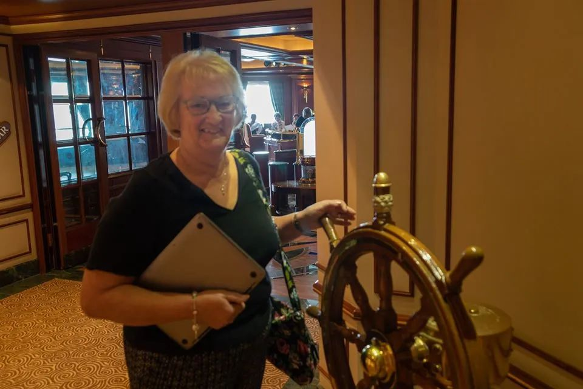
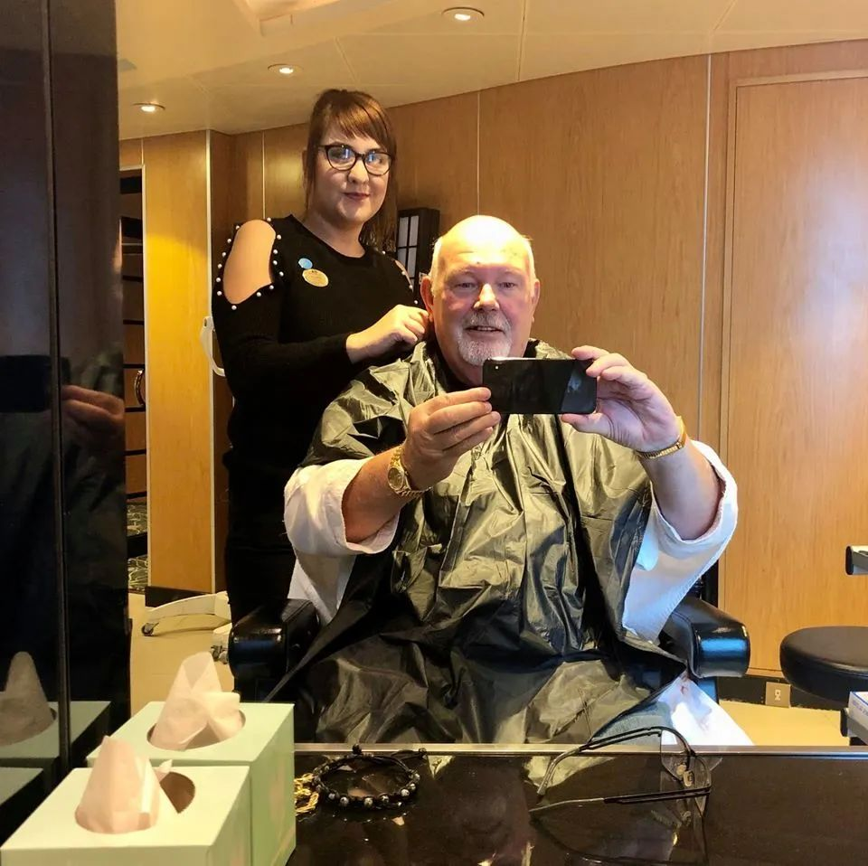
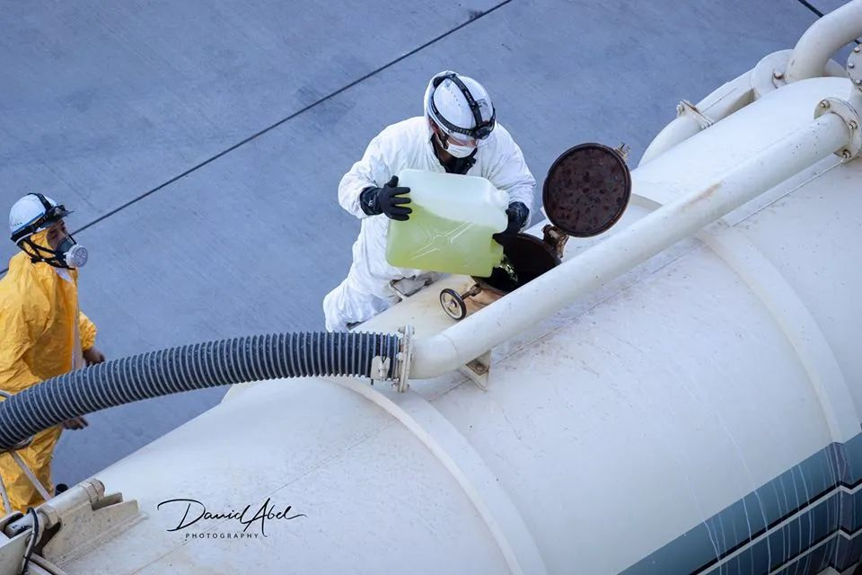
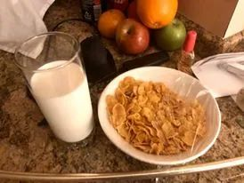

无法靠岸的「钻石公主号」
原文链接 备份链接 「钻石公主号」邮轮的离岸隔离进行到第九天，已经有174人确认感染新冠肺炎，超过了日本本土的确诊感染总数，且还在增加。一个突然来袭的新型病毒，一场突然降临的隔离，一艘无法靠岸的船。「钻石公主号」像个隐喻，它暴露了看似平滑 …
澎湃新闻记者 张无为

亚伯在“钻石公主”号上拍下的富士山 本文图片均来自大卫·亚伯社交媒体
2月19日，在经历了14天的海上隔离后，备受关注的“钻石公主”号邮轮首批新冠病毒检测呈阴性且未与确诊病例同舱室的443名乘客终于回到了陆地上。
与此同时，因几乎每天在社交媒体“脸书”上发布视频和文字“直播”船上隔离生活而被全世界网友关注的74岁英国乘客大卫·亚伯（David Abel），却和妻子莎莉·亚伯（Sally Abel）忧心忡忡地在自己的客舱内等待着。
亚伯夫妇本应在当天结束隔离，但就在此前一天，一名无法用英语交流的日本检疫工作人员敲开了亚伯夫妇的房门，示意他们可以准备下船。“我问，‘那么，（病毒检测）是阳性（positive）？’对方点了点头。”亚伯随即在“脸书”上宣布了这一结果。但一夜过后，亚伯觉得，对方的点头可能只是表达对亚伯夫妇即将下船一事是“positive（肯定）”的。
然而，不到两个小时之后，亚伯再度更正称，在一位会讲英语的医生的帮助下，他终于搞清楚了，“我们被确诊感染了新冠病毒”，尽管亚伯夫妇俩都觉得自己身体状态很好。
这一过山车似的乌龙事件，让一直以来关心亚伯夫妇的全世界网友颇为忧心——他们不愿意相信，这个每天发布隔离生活点滴、总是乐观开朗的“网瘾爷爷”，会在隔离结束前的最后一天收到这个坏消息，甚至有人怀疑确诊信息是亚伯的“脸书”账号被“黑客”入侵后的恶作剧。19日中午，亚伯不得不在“脸书”上发布了他的第61条Vlog（视频博客），向网友证明一切都是真的，“他是他自己”。
截至20日晚，停靠在日本横滨港的“钻石公主”号邮轮上的3711名乘客和船员中，已累计确诊634人，其中两名80多岁的患者不治身亡。此外，已有近千名乘客结束隔离下船，包括美国、韩国等多国组织了撤侨行动。
2月20日下午3点，亚伯更新了“脸书”状态，他贴出了自己和莎莉接受治疗的画面，并称夫妻俩在一家“可爱的”医院，“我们的两个护士很漂亮，莎莉也很喜欢医生。”亚伯似乎又恢复了此前的乐观和幽默。他说，次日他将进行胸片、心电图、尿检等项目，网友们的信息他已收到，只是他之后或将不便回复。


2月20日，亚伯夫妇在日本的医院接受检查
被打乱的金婚纪念之旅
大卫·亚伯来自英国北安普敦，是一名婚礼主持，并开办了相关的培训公司。在他的个人主页上，他还称自己为“环球旅行者”和“自然摄影师”，经常和妻子莎莉到世界各地旅游，在“脸书”上发布用单反相机拍摄的照片。
“钻石公主”号之旅本来是亚伯夫妇为了庆祝结婚50周年而特别制订的行程，亚伯为此订了一间昂贵的套房，房间约有80平方米，是一般无窗舱房的五倍，房间外还有阳台，可以吹海风看海景。1月20日，邮轮从母港横滨启航，先后停靠了日本鹿儿岛、中国香港、越南下龙湾和中国台湾等地。
每到一个景点打卡，亚伯都会在他的“脸书”账号上分享自己和妻子拍摄的照片。1月22日，他们在日本鹿儿岛看活火山和日本园林；1月25日，来到了中国香港；1月28日，夫妻俩在越南爬上了数百级阶梯去参观寺庙……
此时，新冠病毒疫情已在中国发生，平时就有“网上冲浪”习惯的亚伯是这艘载有来自五十多个国家的乘客的豪华邮轮上，较早关注到疫情的人之一。1月30日，亚伯记录道：只要观测体温、勤洗手、不使用公共厕所，病毒在这艘船上应该不会成为问题。但是，回到英国后，他会和莎莉自觉隔离14天，因为这艘船上有来自中国香港的乘客。“除了恐惧，我们享受着船上的每一刻。”


亚伯夫妇在船上的照片
然而，这艘被选为亚伯夫妇金婚纪念之旅的豪华邮轮，最终未能免受疫情的袭扰。
2月1日，一名曾搭乘邮轮从横滨前往香港的乘客被确诊感染新冠肺炎；2月3日，邮轮提前一天返回横滨港，但没有靠岸，日本厚生劳动省开始进行全船检疫。
2月3日上午8点，邮轮广播向乘客通报，船只将会提前到达横滨并接受检疫，但广播并未提及那名被确诊的香港乘客。当天，亚伯在他的“脸书”上转发了一则新闻，提及“钻石公主”号将因被确诊乘客而进行检疫，“天啊，这就是我们乘的这艘船！”亚伯大呼。他说，这时，已经有乘客猜测，他们会被强制隔离，这艘船将“无处可去”。
2月3日晚，检疫人员登船，检疫工作一直持续到第二天。亚伯4日立即取消了下船后飞回英国的航班，他几乎百分之百肯定，自己和莎莉无法按时回到英国。
2月5日，日本厚生劳动省宣布邮轮上首批被检测者中有10人确诊感染新冠病毒，为防止疫情扩散，日本官方要求所有乘客和船员在邮轮上集中隔离14天，除了当值的工作人员和每天一个半小时的“放风”时间，所有人必须呆在自己的房间里。
这一消息让船上很多乘客一时难以接受，他们中的大多数人是和亚伯夫妇一样的老年人——2666名乘客中，60岁以上占八成。他们中的一些人患有各类基础疾病，也无法从网络上获取信息。突如其来的两周隔离生活让他们无所适从。
乐观的“网瘾爷爷”
相比之下，尽管行动受到限制，亚伯似乎并未被隔离生活所困扰，闲来无事，他在网上频繁发布视频和文字，讲述自己和妻子的隔离生活，更以自己的乐观幽默，以及“话唠”式的视频风格，成为了收获全世界无数粉丝的“网红爷爷”。
“钻石戴夫和公主莎莉（Diamond Dave and Princess Sally）在邮轮上接受检疫的冒险之旅。这是一个真诚的频道，你会比任何人都先听到最新消息。”亚伯在自己视频网站Youtube主页介绍一栏写道，“戴夫”他名字大卫的昵称。

亚伯发布在社交网站上的视频截图
2月4日上午9点，亚伯发布了检疫开始后的第一条视频，介绍自己和船上乘客的处境。“船上信息不及时”，“检疫太慢”，亚伯开启“吐槽”模式，由于网络信号差，他将视频分为两段发。在第二则视频里，他戴着墨镜，站在阳台上，背靠大海，仍是一副正在度假的悠闲模样。
在证实将被隔离14天后，亚伯在视频中说，幸好他订了有阳台的房间，“我们从中吸取了一个教训，多花点儿钱订一间有阳台的房间特别值得。”
2月6日，亚伯在邮轮上拍摄夕阳
2月6日，亚伯上传了一张自己架着三脚架，用单反相机拍摄横滨夕阳的照片。夕阳下的大桥、海面、远处的高楼和富士山，一切都很美。
2月8日，亚伯说，他想念自己的两条狗“布丁”和“蜂蜜”了，他上传了一张自己与爱宠的合影，引发网友们在评论区争相晒出自己与狗的照片。
2月8日，亚伯拍下的和他打招呼的临舱乘客
同一天，亚伯还在房间的阳台上，与两名相隔不远的“邻居”打招呼。“这是一个美丽的早晨，生活是美好的。”亚伯写道，“他们精神都很好，莎莉和我周围都是一些可爱的人啊！”
不仅如此，面对隔离的苦闷，74岁的亚伯还不忘“皮”一下。2月8日，他发布了一段妻子莎莉跟着电视节目学太极的视频，配文打趣道：“她不知道我在拍（她），所以只有你们和我知道。”
除了分享自己的日常，亚伯还会留意并分享邮轮上发生的新闻。
2月5日，亚伯说，早上7点，“两架直升机和四艘船一直停靠在我们船边”。2月6日，“昨晚有一位女士没有收到晚餐，她走出房间想找人问问，工作人员发现后立刻对她大喊，让她马上回到自己的房间。”
这天，亚伯还拍下了一张乘客对外呼救的照片，“美国，救救我们！”这句话被写在一张布上，挂在阳台上。

邮轮上的废水处理
12日，亚伯关注到了船上的污水处理，“消毒液被倒进了邮轮废水中，希望媒体能看到并报道。”
亚伯的视频引来世界各地网友的评论和祝福，他们感谢亚伯一直用积极的态度来应对这场危机。每天，亚伯都会开启一个话题，话题下的评论区成了人们讨论此事的最佳场所。
有人称，看了亚伯的视频，“袜子都笑掉了”，还有无数媒体在其状态下留言，想采访他，邀请他做节目。有粉丝留言称，“亚伯，一夜之间成为明星的感觉如何？”“我不想成为明星，我只想引起人们的注意。”亚伯回复说。
成为“网红”之后，亚伯还当起了“中介”——来自世界各地的“钻石公主”号老年乘客的子女通过亚伯的“脸书”页面了解船上真实情况，并将自己无法熟练使用互联网的父母的名字及在船上内部电话的号码告诉亚伯，亚伯一一找到他们，通过电话线和网络，为邮轮内受困的老人和邮轮外忧心的子女架起了桥梁。
亚伯与莎莉的儿子斯蒂芬·亚伯（Stephen Abel）接受了英国独立电视台（ITV）25分钟的独家采访，但在最终播出的节目中，只保留了4分钟的采访内容，让斯蒂芬最遗憾的是，自己父亲通过直播来帮助船上乘客的内容被删去了，他本希望更多人可以通过这种方式找到亚伯夫妇，让自己的父母“有事可做，不致于被憋疯”。斯蒂芬因此在自己的“脸书”主页上再次分享了父亲的主页，希望更多人留下积极的信息，帮助父母度过隔离的最后几天。

亚伯贴出的他与“布丁”的照片
等不到的糖尿病人菜单
尽管亚伯时时表现得乐观甚至有些调皮，但在“钻石公主”号上的隔离生活对身患糖尿病的他而言并不舒适。
据斯蒂芬透露，父亲亚伯患有2型糖尿病，患者通常会表现出高血糖、伴有意识水平下降以及低血压的症状，容易被感染。亚伯几年前还被诊断出患有早发性痴呆，这也是糖尿病的并发症。
隔离第二天，亚伯在视频直播中说，自己已经有十六七个小时没有进食，对于患有糖尿病的他来说，这很可能导致昏迷。他的直播奏效了，工作人员响应这一请求，随后送来了食品，虽然亚伯后来又在视频中开玩笑似的喊话“想吃香蕉”、“想要一瓶威士忌”都得到了满足，但他长期需要的“糖尿病人特殊菜单”却一直没有得到回应。
2月13日，凌晨5点，“地狱般的一个晚上”，亚伯依然醒着，旁边莎莉已经熟睡，他默默打开手机，敲下一行字：“我很喜欢与他人联系，但不擅长向他人寻求帮助。”

邮轮上提供的餐食
“钻石公主”号提供的餐食虽然是一流的，但对患有糖尿病的亚伯来说，却并不友好，隔离一周以来的困扰在这个夜晚倾泻而出：“自从被隔离以来，没有超过三顿饭是符合我要求的，我的胃一天24小时都在咕咕叫，我真的很饿。”亚伯列出了邮轮每天提供的早餐：橙汁——对糖尿病人有害；两杯酸奶——含乳糖的奶制品对他来说是致命的；三个面包圈、一个馅饼和一个松饼——都是高碳水化合物，它们转化为葡萄糖后会让他的血糖“高得吓人”。所以，亚伯说，他一天当中的大部分时间不吃东西，只是喝水。
亚伯于是郑重地提出了自己对船上三餐的要求，他还表示，为了方便厨房，早餐只需要一杯不含乳糖的牛奶和玉米片就可以了。“我每天就只需要这一些，这就是我想要的。”然而，亚伯也知道，直接给餐厅打电话不是最好的解决办法，“因为他们压力很大，从他们的声音中可以听出来。”他写了一封信，希望通过船员间接转告给厨师。2月14日，他终于收到了需要的早餐。

2月14日，亚伯终于在吃到了他要求的早餐
“光总会胜利”
除此之外，随着隔离时间的推进和越来越多确诊病例的宣布，亚伯也越来越难以掩饰自己的沮丧。
2月9日，他在直播中说，自己受够了。
2月14日，距离隔离结束还有5天，亚伯上传了一个长达42分钟的视频，分享他在 “钻石公主”号一路以来的经历，他表示，自己收到了来自船员和岸上朋友寄来的非常多的惊喜。但是，亚伯还是在当天的视频中表达了焦虑的心情。他向英国维珍航空公司老板理查德·布兰森（Richard Branson）喊话求助，他希望布兰森能派一架飞机来接走困在邮轮上的所有英国乘客，让他们在英国继续接受隔离。亚伯还批评了英国首相鲍里斯·约翰逊，称对他不信任。
“我是认真的。”亚伯情绪激动道，“我们现在不知道该怎么办，希望您（布兰森）不要让我们失望。”“我们受够了，真的受够了！”
亚伯情绪的波动被大家看在眼里，网友们试图安慰他：
克里斯蒂娜·安（Christina Ann）留言说：“情人节快乐！我已经追踪你的故事大约一个星期了，你们两个真是太神奇了！……希望您早日回家与家人和小狗相聚。”
金·米勒·凯利（Kim Miller Kelly）则用经典的英国食物“拉仇恨”：“给你看亚伯！这是三个星期前我吃的炸鱼薯条配豌豆泥。”这条评论得到了亚伯的回复：“你这个混蛋。”
亚伯和莎莉在随后的一则视频中设想着万一两人中有人被检测出新冠病毒阳性，亚伯哽咽着说，最害怕与莎莉分开，如果其中一个人会得病，他希望是自己。
2月15日，亚伯和莎莉接受了病毒检测，“这对我来说不是一个很好的体验，他们用棉签蘸了我喉咙里面，我都快吐了！估计结果出来需要2到3天。”
2月16日晚上9点，亚伯发布了一系列最新消息：“美国乘客现在下船了，他们可以坐飞机回家，回家终归会舒服一些。36个小时以后，加拿大人也要回家了。中国香港也正在组织公民撤离。意大利政府宣布要把他们国家的人带回家。韩国人正在组织撤侨。”
2月17日，亚伯忍不住了，他再次质问约翰逊，“是不是英国政府根本不在乎船上的英国乘客”，他感觉被遗弃了。
第二天，亚伯又发了一则视频道歉称，自己之前情绪处于极度崩溃的状态，因而说了一些对约翰逊不礼貌的话。最后亚伯表示，将代表英国人，坚守住自己（完成隔离）的责任。
几个小时后，亚伯得到消息，英国政府也决定派飞机来接回邮轮上的英国乘客。
但是，亚伯和莎莉却无法登上那架等待已久的飞机。
2月19日，“钻石公主”号第一批乘客结束了隔离、开始下船的时候，亚伯在经过一晚上的悲喜与等待后，最终在一名说英语的医生口中确认了自己和莎莉确诊感染新冠病毒一事。
亚伯的儿子斯蒂芬表示，希望不要将父母分开，“我父亲患有早发性痴呆，他醒来后可能会有点困惑，所以我妈妈需要陪在他身边。”
20日下午，斯蒂芬发布了最新一则视频：你可以在最开始十来天的视频中看到我爸妈是什么样的人，他们很棒，人人都爱他们，但是越到后面，他已经（情绪受影响）不是他自己了。“他们目前的状态都不好，特别是我爸爸，他已经24个小时没有进食了，上一次我跟他聊天的时候，我说听到他在卫生间呕吐的声音，但其实他不会吐，因为他的肚子里已经没东西了。”
亚伯在“脸书”主页上对自己的描述有很多，其中一项是“自然摄影师”。2月8日，亚伯发布了一张在邮轮上拍摄的日落时的天空，虽然云层密布，但金色的阳光仍然从空隙中射出。亚伯在照片上写下“光总会胜利”，并配文说：“别害怕，只要时间对，我们总会迎来新的黎明。”
2月8日，亚伯在“钻石公主”号上拍下的照片
戳这里进入
“全国新型冠状病毒感染病例实时地图”↓↓↓
本期编辑 常琛
推荐阅读


原文链接 备份链接 「钻石公主号」邮轮的离岸隔离进行到第九天，已经有174人确认感染新冠肺炎，超过了日本本土的确诊感染总数，且还在增加。一个突然来袭的新型病毒，一场突然降临的隔离，一艘无法靠岸的船。「钻石公主号」像个隐喻，它暴露了看似平滑 …
原文链接 备份链接 _ 一名香港游客感染了新冠肺炎病毒，使得这艘邮轮的“春节之旅”演变为一场全球直播的公共卫生事件 _ 文 |《财经》记者 杨立赟 余乐 编辑 | 余乐 最近一周以来，停靠在日本横滨港的“钻石公主号”邮轮成为了全球关注的 …
原文链接 备份链接 图片来源：WikiCommons 记者：田思奇 “ “当我们回顾过去时，很容易对当时某一时刻的公共卫生决策做出评判。当时的决定，显然比让所有人分散在世界各地要好得多。研究这一特殊事件，看看过程中出了什么问题，这非常重 …
原文链接 备份链接 图片来源：CNN “ 有报告指出，根据发病日期来看，在邮轮实施隔离措施后，乘客之间的传染有所减少。在隔离期后期，感染主要发生在船员之间以及客舱之内。 ” 继昨天443名检测呈阴性的乘客离开“钻石公主”号邮轮后，600多 …
原文链接 备份链接 钻石公主号邮轮在全球新冠疫情中是一个特殊又典型的样本：由于邮轮的封闭环境，它成为了传染集中暴发地，证明了全人类的普遍易感性；这又是一艘停靠在日本、船籍是英国、运营主体属于美国的邮轮， …